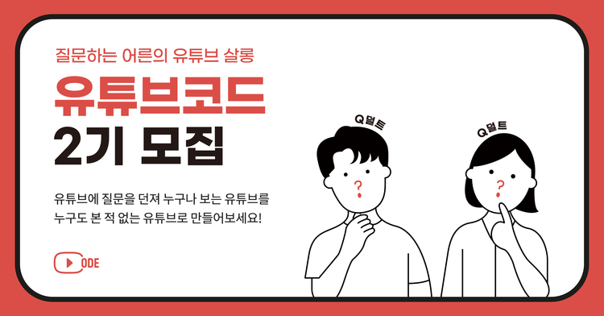

유튜브에 질문을 던져 누구나 보는 유튜브를 누구도 본 적 없는 유튜브로 만들어보세요.
유튜브에는 기존 미디어에서 볼 수 없던 기획과 포맷의 콘텐츠가 넘쳐납니다.
해외 콘텐츠를 보는 데도 제약이 없고, 취향에 맞는 콘텐츠를 원하는 시간에 원하는 장소에서 볼 수 있습니다.
언뜻 자유롭고 능동적으로 유튜브를 보고 있는 듯 합니다.
정말 그럴까요? 유튜브는 기존에 봤던 콘텐츠를 바탕으로 알고리즘에 따라 개인이 선호할 만한 또다른 콘텐츠를 추천해 이어서 볼 수 있게 만듭니다.
맞춤화된 영상이라 개인의 취향을 크게 벗어나지 않지만, 문제는 과거의 데이터에 갇힌다는 것입니다.
콘텐츠가 새로울 순 있어도, 알고리즘에 의한 추천에만 의존하다보면 다양성을 잃을 수 있습니다.
'다양성 속의 획일성'이라는 역설적 현상이 벌어집니다.
유튜브를 보면서 '의식의 자동화'에서 자유로워질 수 있을까요? 질문하는 어른의 유튜브 살롱, 유튜브코드에서는 가능합니다.
유튜브를 함께 보면서 서로 질문을 하고 깊이 있는 이야기를 나눠보세요.
울음을 그칠 줄 알아야 어른이 될 수 있지만, 물음은 그칠 줄 몰라야 진짜 어른 'Q덜트'가 될 수 있습니다.
